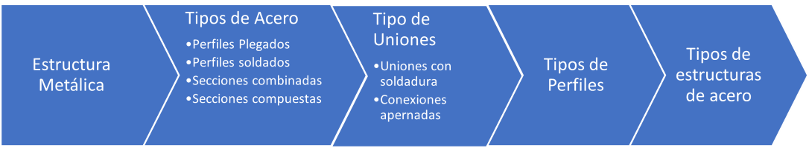
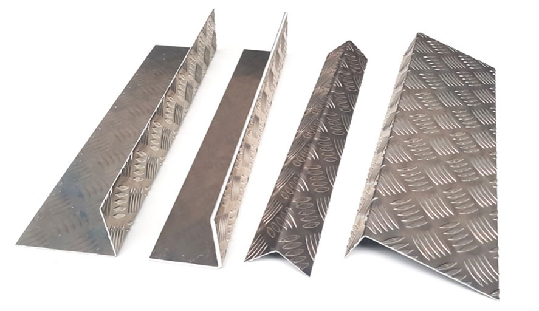
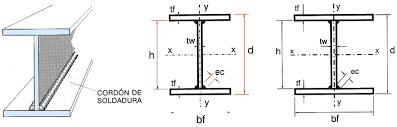
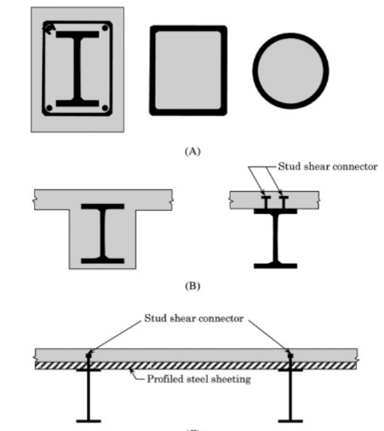
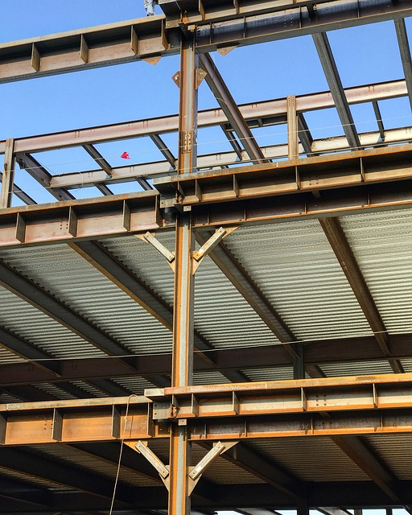
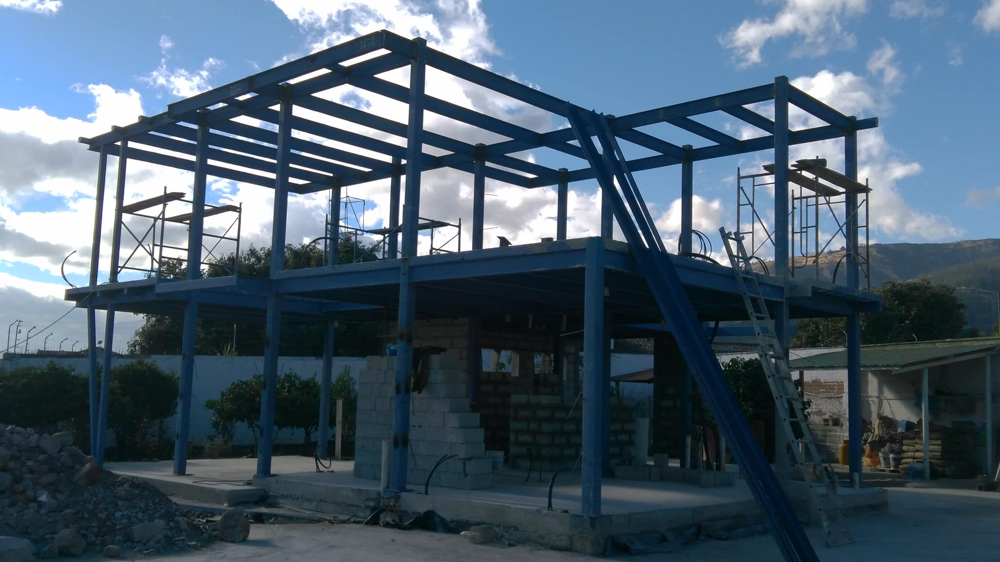
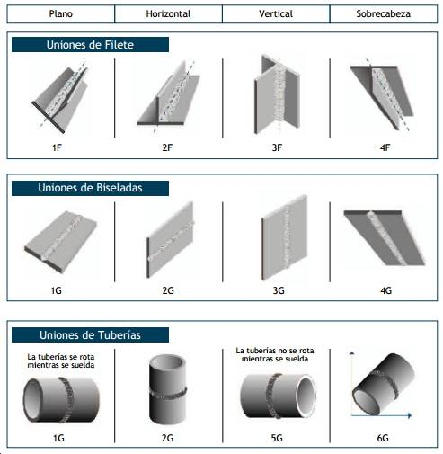
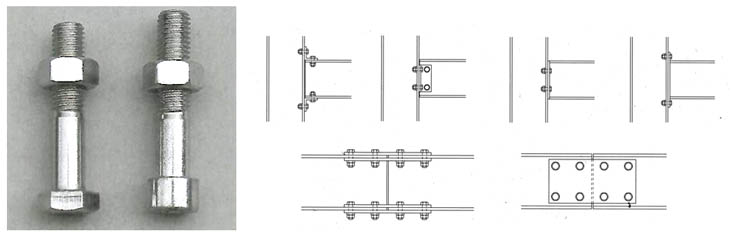
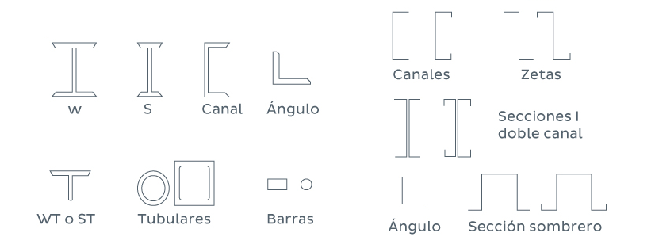
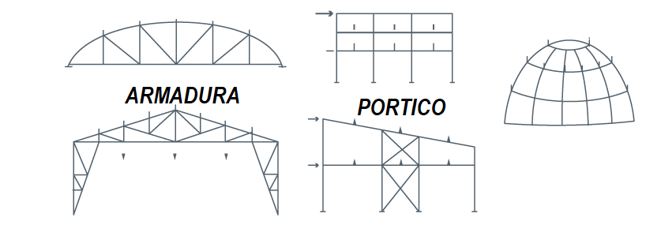

Estructura Metálica
Contents
{kind=link}
18. Estructura Metálica#
Es frecuentemente utilizado para la elaboración de marcos rígidos, columnas y vigas, para la edificación que posee varios niveles, las columnas de acero, son malos elementos estructurales cuando trabajan por si solo y son inadecuados para recibir fuerzas laterales, por lo que necesita anclajes superiores he inferior conectándose entre sí por medio de vigas metálicas, trabajando como sistema de agarre entre los elementos verticales (Cevallos, 2016).
{kind=link}
18.1. Tipos de Acero#
Sauza (2014), en su investigación “”Proyecto de una estructura metalica para cancha deportiva”” mencionas que las siguientes variedades de acero se pueden utilizar para crear perfiles para estructuras de acero.
Aceros laminados en caliente
Se entiende por tales, a aceros no aleados con una microestructura típica, sin características especiales de resistencia mecánica o resistencia a la corrosión.
Aceros con estructuras especiales
a. Aceros normalizados de grano fino para construcción soldada. b. Aceros de laminado termo mecánico de grano fino para construcción soldada. c. Aceros con resistencia mejorada a la corrosión atmosférica. d. Aceros templados y revenidos. e. Aceros con resistencia mejorada a la deformación en la dirección perpendicular a la superficie del proyecto.
Aceros conformados en frio
Se entiende por tales aceros cuyo método de fabricación consiste en el conformado en frío, lo que les confiere unas cualidades únicas en cuanto a la sección y resistencia mecánica.
18.1.1. Perfiles Plegados#
{kind=link}
18.1.2. Perfiles soldados#
{kind=link}
18.1.3. Secciones combinadas#
Los perfiles se pueden plegar o soldar para crearlos.
18.1.4. Secciones compuestas#
{kind=link}
18.2. Tipo de Uniones#
{kind=link}
18.2.1. Uniones con soldadura#
{kind=link}
Estrutura metalica soldada
{kind=link}
18.2.2. Conexiones apernadas#
{kind=link}
Estructura metalica apernada
{kind=link}
18.3. Tipos de Perfiles#
{kind=link}
18.4. Tipos de estructuras de acero#
{kind=link}
from IPython.display import YouTubeVideo
YouTubeVideo("IAqHNzZ7JNQ")